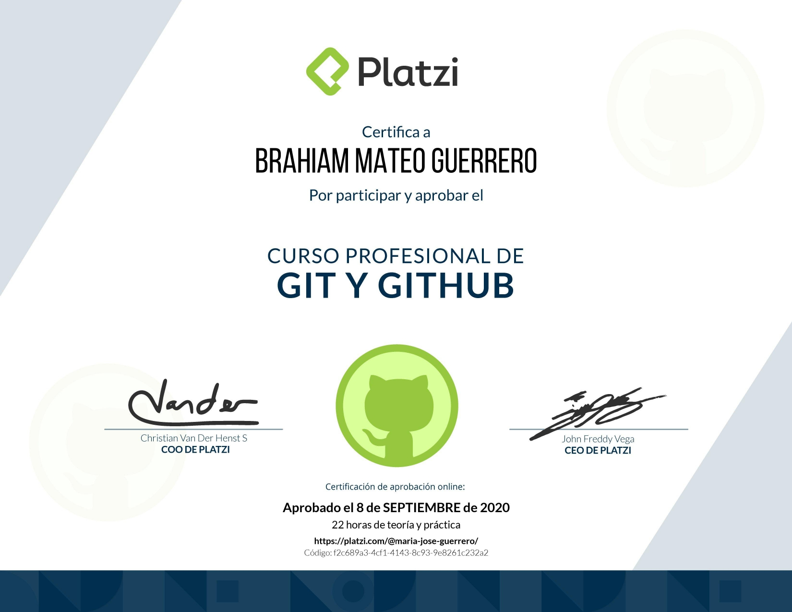

Brahiam Mateo Guerrero Cortes
Frontend Developer | Manizales, Caldas | majo.cortes.sh@gmail.com | +57 317 3060475 | C.C 1014266967 | Residencia: Calle 58 D # 08-51 -La Cumbre | Estado civil: Soltero | Fecha de nacimiento: 27/06/1995
Perfil
Desarrollador frontend apasionado por crear experiencias de usuario eficientes y estéticas. Busco aplicar mis conocimientos en HTML, CSS, JavaScript y React para contribuir en proyectos que generen impacto.
Proyectos Relevantes
Seguros J&A - Plataforma Informativa
Proyecto Para J&A | 2024
- Desarrollo de una plataforma informativa sobre seguros utilizando Next.js y React.
- Optimización del rendimiento y diseño responsive para dispositivos móviles.
- Implementación de componentes reutilizables y estéticos para la gestión del contenido.
Experiencia
Manejo de redes sociales y soluciones tecnologicas
Inmobiliaria La Española | Ene 2019 - 2021
- Manejo de redes sociales, acompañar y proponer campañas publicitarias con impacto en internet.
- Desarrollo de soluciones tecnologicas a los desafios de la empresa
- Jefe dierecto, gerente de ventas: William Campos (317)7260528
Autoaprendizaje y Certificaciones
5 años de Derecho - Universidad Libre, 2014-2020
Autoaprendizaje y Certificaciones
Fundamentos de Ingeniería de Software - Platzi, 2020

Curso de Diseño para Developers - Platzi, 2021

Curso Profesional de Git y GitHub - Platzi, 2021
Frontend Developer - Platzi, 2021

Responsive Design: Maquetación Mobile First - Platzi, 2021

Habilidades Técnicas
- HTML, CSS, JavaScript
- React, Next.js
- Node.js (En aprendizaje)
- Git, GitHub
- Responsive Web Design
- Pruebas técnicas frontend
Otras Experiencias
Atención al Cliente
Teleperformance | 2022 - 2023
- Resolución de problemas de los clientes de manera eficiente.
- Gestión de solicitudes y prioridades en un entorno de ritmo rápido.
Idiomas
Español (Nativo), Inglés (Intermedio)